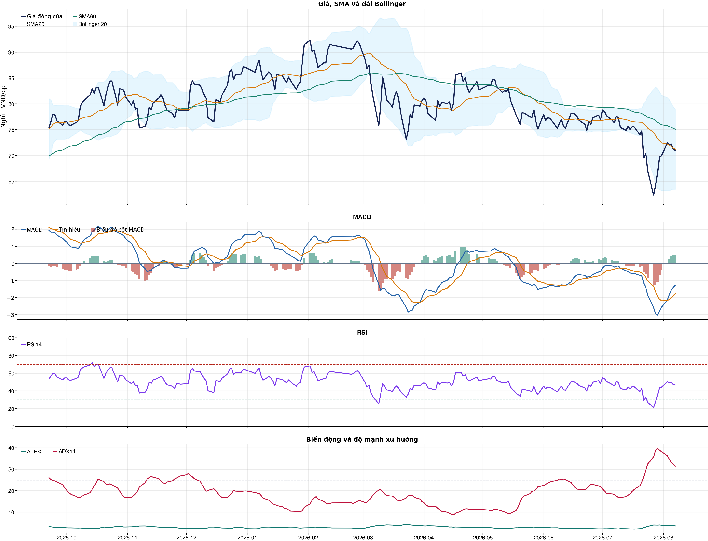
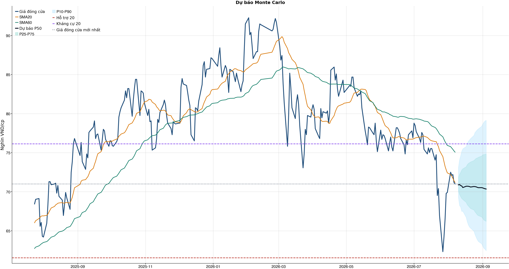
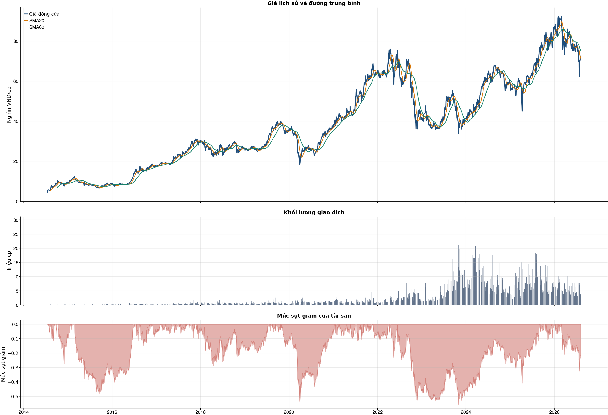

Kết quả chính
Tổng quan cơ bản
Biểu đồ kỹ thuật

Tín hiệu kỹ thuật
| Xu hướng | Cẩn thận | Giá nằm dưới SMA60. |
| MACD | Tích cực | MACD trên signal, histogram dương. |
| RSI14 | Trung tính | RSI 46.7. |
| Bollinger | Ổn định | Giá nằm trong dải Bollinger. |
| ADX | Xu hướng giảm | ADX 31.4, -DI vượt +DI. |
| Thanh khoản | Thấp | 0.59 lần trung bình. |
| Stochastic | Yếu lại | %K nằm dưới %D. |
So sánh mô hình
| XGBoost | 0.511 | AUC 0.510 |
| Logistic | 0.530 | AUC 0.520 |
| Đa số | 0.500 | Mốc so sánh |
Kiểm thử chiến lược ngoài mẫu sau chi phí
| Lợi nhuận ròng | -6.6% | 756 quan sát ngoài mẫu |
| Sharpe | -0.19 | Sau chi phí |
| Mức sụt giảm tối đa | -14.2% | 84 vòng giao dịch |
| Chi phí giả định | 50.0 bps | Một vòng mua và bán |
Mức độ quan trọng của đặc trưng
| relative_strength_20d | 9.10 | Mức đóng góp |
| beta_60d | 9.09 | Mức đóng góp |
| stoch_k_14 | 8.93 | Mức đóng góp |
| day_of_week | 8.69 | Mức đóng góp |
| month_of_year | 8.27 | Mức đóng góp |
| return_20d | 8.18 | Mức đóng góp |
| macd_hist_pct | 8.12 | Mức đóng góp |
| volume_ratio_20 | 8.12 | Mức đóng góp |
Điều kiện phát hành tín hiệu
| AUC của mô hình | KHÔNG ĐẠT | Điều kiện phát hành tín hiệu |
| Độ chính xác cân bằng của mô hình | KHÔNG ĐẠT | Điều kiện phát hành tín hiệu |
| XGBoost vượt mô hình Logistic đối chứng | KHÔNG ĐẠT | Điều kiện phát hành tín hiệu |
| Xác suất tăng đạt ngưỡng | KHÔNG ĐẠT | Điều kiện phát hành tín hiệu |
| Bối cảnh kỹ thuật đạt ngưỡng | KHÔNG ĐẠT | Điều kiện phát hành tín hiệu |
| Tỷ lệ lợi nhuận/rủi ro đạt ngưỡng | ĐẠT | Điều kiện phát hành tín hiệu |
| Dữ liệu còn mới | ĐẠT | Điều kiện phát hành tín hiệu |
| Có khối lượng vị thế hợp lệ | ĐẠT | Điều kiện phát hành tín hiệu |
| Có kết quả kiểm thử chiến lược ngoài mẫu | ĐẠT | Điều kiện phát hành tín hiệu |
| Mẫu kiểm thử chiến lược đủ lớn | ĐẠT | Điều kiện phát hành tín hiệu |
| Kiểm thử chiến lược có lợi thế ròng | KHÔNG ĐẠT | Điều kiện phát hành tín hiệu |
Quản trị rủi ro
| Rủi ro/lệnh | 1.0% | 1,000,000 VND |
| Mức dừng lỗ | 67.27 | Rủi ro mỗi cổ phiếu 4.07 |
| Mục tiêu 1 | 79.14 | Lợi nhuận/rủi ro 1.90 |
| Mục tiêu 2 | 79.14 | Dự báo/kháng cự |
Phân tích cơ bản
| P/E | 10.65 | 2026-Q2 |
| P/B | 2.93 | 2026-Q2 |
| P/S | 0.59 | 2026-Q2 |
| ROE | 29.2% | 2026-Q2 |
| ROA | 11.2% | 2026-Q2 |
| Gross margin | 20.7% | 2026-Q2 |
| Net margin | 5.6% | 2026-Q2 |
| Debt/Equity | 1.89 | 2026-Q2 |
| Current ratio | 1.44 | 2026-Q2 |
| NPL | 0.0% | 2026-Q2 |
| Dividend yield | 0.0% | 2026-Q2 |
| Market cap | 104,779.4 tỷ | 2026-Q2 |
| Revenue Growth | 29.6% | 2026-Q2 YoY |
| Profit Growth | 100.4% | 2026-Q2 YoY |
| Dòng tiền từ HĐKD | 16,986.7 tỷ | 2026-Q2 |
| CAPEX | -296.5 tỷ | 2026-Q2 |
| Lợi nhuận sau thuế | 3,354.9 tỷ | 2026-Q2 |
| Lợi nhuận hoạt động | 4,034.4 tỷ | 2026-Q2 |
| Chi phí lãi vay | -436.3 tỷ | 2026-Q2 |
| Tiền và tương đương tiền | 17,993.7 tỷ | 2026-Q2 |
| Vay ngắn hạn | 29,089.6 tỷ | 2026-Q2 |
| Vay dài hạn | 0.0 tỷ | 2026-Q2 |
| Tổng tài sản | 104,915.0 tỷ | 2026-Q2 |
| Tổng nợ phải trả | 68,563.6 tỷ | 2026-Q2 |
| Vốn chủ sở hữu | 36,351.3 tỷ | 2026-Q2 |
| Khoản phải thu | 2,434.3 tỷ | 2026-Q2 |
| Hàng tồn kho | 30,874.9 tỷ | 2026-Q2 |
| Dòng tiền tự do (CFO - CAPEX) | 16,690.1 tỷ | 2026-Q2 |
| CFO / Lợi nhuận sau thuế | 5.06 | 2026-Q2 |
| Nợ vay ròng | 11,095.9 tỷ | 2026-Q2 |
| Nợ vay / Vốn chủ sở hữu | 0.80 | 2026-Q2 |
| Phải thu / Tổng tài sản | 2.3% | 2026-Q2 |
| Khả năng trả lãi (EBIT / lãi vay) | 9.25 | 2026-Q2 |
Tin tức doanh nghiệp
| Trạng thái | Có dữ liệu | research_only |
| Nguồn / số bài | VCI | 50 |
| Bài đủ timestamp | 50 | Chỉ các bài này mới được phép dùng point-in-time |
| Sentiment 5 ngày | 0.00 | 1.0 bài trước cutoff |
| Phương pháp | keyword_heuristic_v1 | Research only; chưa dùng làm tín hiệu mua/bán |
Dự báo ngắn hạn
| 2026-08-10 | 70.88 | P10 69.29 / P90 73.09 |
| 2026-08-11 | 70.92 | P10 68.25 / P90 74.08 |
| 2026-08-12 | 70.80 | P10 68.04 / P90 74.59 |
| 2026-08-13 | 70.74 | P10 67.49 / P90 75.18 |
| 2026-08-14 | 70.54 | P10 67.51 / P90 75.50 |
| 2026-08-17 | 70.70 | P10 66.72 / P90 75.78 |
| 2026-08-18 | 70.71 | P10 66.16 / P90 76.23 |
| 2026-08-19 | 70.70 | P10 65.75 / P90 76.47 |
Biểu đồ dự báo

Lịch sử giá và mức sụt giảm

Báo cáo dùng để học tập và lập kịch bản, không phải khuyến nghị mua/bán.
Phân tích AI có kiểm chứng
Trạng thái quyết định: NO_EDGE
Tóm tắt: ML decision hiện giữ nguyên NO_EDGE. News Reader đã trích đoạn có nguồn của 4 bài để phân loại chủ đề (ket_qua_kinh_doanh: 4, co_tuc_va_hanh_dong_doanh_nghiep: 3, vi_mo: 3, nganh: 4), nhưng các trích đoạn này không tạo bằng chứng mới cho quyết định đầu tư.
Kỹ thuật: Artifact kỹ thuật: bias Suy yếu / cẩn thận; điểm -3. Chi tiết artifact: Xu hướng: Cẩn thận (Giá nằm dưới SMA60.); MACD: Tích cực (MACD trên signal, histogram dương.); RSI14: Trung tính (RSI 46.7.); Bollinger: Ổn định (Giá nằm trong dải Bollinger.); ADX: Xu hướng giảm (ADX 31.4, -DI vượt +DI.); Thanh khoản: Thấp (0.59 lần trung bình.); Stochastic: Yếu lại (%K nằm dưới %D.)
Cơ bản: Artifact cơ bản: Thế giới di động; kỳ 2026-Q2; P/E 10.65; P/B 2.93; ROE 29.2%; ROA 11.2%; Debt/Equity 1.89; Revenue Growth 29.6%; Profit Growth 100.4%.
Tin tức: Đã đọc trích đoạn giới hạn của 4 bài; phân nhóm rule-based: ket_qua_kinh_doanh: 4, co_tuc_va_hanh_dong_doanh_nghiep: 3, vi_mo: 3, nganh: 4. Tác động cần kiểm chứng: Đối chiếu doanh thu/lợi nhuận trong bài với BCTC và kỳ vọng thị trường. Kiểm tra ngày GDKHQ, tỷ lệ, nguồn chi trả và nguy cơ pha loãng trước khi đánh giá tác động. Đối chiếu thời điểm công bố và kênh tác động lãi suất/tỷ giá với mô hình kinh doanh. So sánh tín hiệu ngành với thị phần, nhu cầu và đối thủ trước khi suy luận cho riêng doanh nghiệp. Đây không phải sentiment hay dự báo tác động giá.
Live research: Live snapshot lấy lúc 2026-08-09T08:33:03.197818+00:00; News Reader đọc được 4 bài. ML có 6 lý do guard và vẫn là NO_EDGE. Không dùng tin live để train/backtest.
Rủi ro cần kiểm chứng
- ML guard: AUC 0.510 < 0.540
- ML guard: Balanced accuracy 0.511 < 0.520
- ML guard: XGBoost chưa vượt logistic baseline: AUC XGBoost=0.5103149093506439, AUC logistic=0.5203041952900149
- ML guard: Probability 45.0% < 55.0%
- ML guard: Technical score -3 < 2
- ML guard: Lợi thế OOS ròng không đạt: return=-0.06561506000000039, Sharpe=-0.1927899940362305
- News Reader: Đối chiếu doanh thu/lợi nhuận trong bài với BCTC và kỳ vọng thị trường.
- News Reader: Kiểm tra ngày GDKHQ, tỷ lệ, nguồn chi trả và nguy cơ pha loãng trước khi đánh giá tác động.
- News Reader: Đối chiếu thời điểm công bố và kênh tác động lãi suất/tỷ giá với mô hình kinh doanh.
- News Reader: So sánh tín hiệu ngành với thị phần, nhu cầu và đối thủ trước khi suy luận cho riêng doanh nghiệp.
- Chỉ lưu trích đoạn giới hạn để kiểm chứng nguồn; không lưu hay hiển thị toàn văn bài báo.
- Phân nhóm là keyword rule-based để định tuyến research, không phải sentiment hay dự báo tác động giá.
- Dữ liệu News Reader chỉ phục vụ research/report; không dùng làm feature train/backtest khi chưa có lịch sử available_at point-in-time.
- Tin live/trích đoạn cần mở URL gốc để kiểm chứng bối cảnh, số liệu và thời điểm trước khi sử dụng.
Bằng chứng
- ML decision artifact: NO_EDGE. AUC 0.510 < 0.540
- ML decision artifact: NO_EDGE. Balanced accuracy 0.511 < 0.520
- ML decision artifact: NO_EDGE. XGBoost chưa vượt logistic baseline: AUC XGBoost=0.5103149093506439, AUC logistic=0.5203041952900149
- ML decision artifact: NO_EDGE. Probability 45.0% < 55.0%
- ML decision artifact: NO_EDGE. Technical score -3 < 2
- ML decision artifact: NO_EDGE. Lợi thế OOS ròng không đạt: return=-0.06561506000000039, Sharpe=-0.1927899940362305
- News Reader [Tin nhanh chứng khoán]: Thế giới Di động (MWG) sẽ không mua cổ phiếu quỹ trong năm 2026 - Tin nhanh chứng khoán | nhóm: ket_qua_kinh_doanh, co_tuc_va_hanh_dong_doanh_nghiep, vi_mo, nganh (2026-08-05T00:21:38+00:00)
- News Reader [VietstockFinance]: MWG: Khuyến nghị MUA với giá mục tiêu 107,300 đồng/cổ phiếu - VietstockFinance | nhóm: ket_qua_kinh_doanh, co_tuc_va_hanh_dong_doanh_nghiep, vi_mo, nganh (2026-08-06T08:54:35+00:00)
- News Reader [dautucophieu.net]: Cập nhật cổ phiếu MWG - Q2/2026: Lợi nhuận thuần tăng gấp đôi so với cùng kỳ, vượt xa dự báo - dautucophieu.net | nhóm: ket_qua_kinh_doanh, nganh (2026-08-05T04:31:03+00:00)
- News Reader [VietnamBiz]: Tổng Giám đốc MWG: Không mua cổ phiếu quỹ trong năm nay, lợi nhuận có thể về đích sớm 2-3 tháng - VietnamBiz | nhóm: ket_qua_kinh_doanh, co_tuc_va_hanh_dong_doanh_nghiep, vi_mo, nganh (2026-08-05T04:43:00+00:00)
Báo cáo chỉ tổng hợp artifact đã lưu để nghiên cứu; không phải khuyến nghị mua/bán. Quyết định và vị thế vẫn bị khóa theo signal_decision.json.
Tin web đã lấy
| Nguồn | Tiêu đề | Thời điểm | Link |
|---|---|---|---|
| Tin nhanh chứng khoán | Thế giới Di động (MWG) sẽ không mua cổ phiếu quỹ trong năm 2026 - Tin nhanh chứng khoán | 2026-08-05T00:21:38+00:00 | Mở nguồn |
| VietstockFinance | MWG: Khuyến nghị MUA với giá mục tiêu 107,300 đồng/cổ phiếu - VietstockFinance | 2026-08-06T08:54:35+00:00 | Mở nguồn |
| Mekong ASEAN | Điện Máy Xanh chính thức đưa hơn 1,26 tỷ cổ phiếu lên sàn HoSE - Mekong ASEAN | 2026-08-06T09:19:08+00:00 | Mở nguồn |
| dautucophieu.net | Cập nhật cổ phiếu MWG - Q2/2026: Lợi nhuận thuần tăng gấp đôi so với cùng kỳ, vượt xa dự báo - dautucophieu.net | 2026-08-05T04:31:03+00:00 | Mở nguồn |
| VietnamBiz | Tổng Giám đốc MWG: Không mua cổ phiếu quỹ trong năm nay, lợi nhuận có thể về đích sớm 2-3 tháng - VietnamBiz | 2026-08-05T04:43:00+00:00 | Mở nguồn |
| VietstockFinance | MWG: Khuyến nghị MUA với giá mục tiêu 107,300 đồng/cổ phiếu - VietstockFinance | 2026-08-08T03:01:23+00:00 | Mở nguồn |
| Mekong ASEAN | 'MWG tự tin hoàn thành mục tiêu lợi nhuận 9.200 tỷ đồng sớm hơn 2-3 tháng' - Mekong ASEAN | 2026-08-04T14:58:20+00:00 | Mở nguồn |
| VietstockFinance | MWG: Khuyến nghị MUA với giá mục tiêu 113,000 đồng/cổ phiếu - VietstockFinance | 2026-08-03T06:55:03+00:00 | Mở nguồn |
| CafeF | Tổng Giám đốc MWG: Tự tin hoàn thành kế hoạch lợi nhuận sớm 2-3 tháng - CafeF | 2026-08-05T12:25:00+00:00 | Mở nguồn |
| MoneyF | Nắm trong tay Điện Máy Xanh, Bách Hóa Xanh, An Khang, vốn hóa MWG chỉ ngang DMX - MoneyF | 2026-08-07T02:09:00+00:00 | Mở nguồn |
News Reader: bài đã đọc và trích đoạn
| Nguồn | Tiêu đề | Nhóm | Thời điểm | Trích đoạn đã đọc | Link |
|---|---|---|---|---|---|
| Tin nhanh chứng khoán | Thế giới Di động (MWG) sẽ không mua cổ phiếu quỹ trong năm 2026 - Tin nhanh chứng khoán | ket_qua_kinh_doanh, co_tuc_va_hanh_dong_doanh_nghiep, vi_mo, nganh | 2026-08-05T00:21:38+00:00 | Xem trích đoạnTại buổi gặp mặt, nhà đầu tư và chuyên gia phân tích quan tâm tới việc giá cổ phiếu MWG giảm thời gian qua dù lợi nhuận tăng trưởng vượt đỉnh, ban lãnh đạo có kế hoạch mua gia tăng sở hữu hoặc mua cổ phiếu quỹ không. Trả lời vấn đề này, ông Vũ Đăng Linh, Tổng giám đốc MWG chia sẻ, giá cổ phiếu do cung cầu thị trường quyết định. Kết quả kinh doanh đang rất tốt nhờ hiệu quả tái cấu trúc, đặc biệt quý II/2026 đạt lợi nhuận đỉnh lịch sử. Hiện Chủ tịch HĐQT Công ty đã thông báo mua 1 triệu cổ phiếu. “Việc mua cổ phiếu quỹ không thể thực hiện trong năm 2026 vì vướng thủ tục pháp lý, nhưng công ty sẽ xem xét trình phương án này cho năm 2027”, ông Linh nhấn mạnh. Trên thị trường chứng khoán, dù Thế giới Di động báo cáo kết quả kinh doanh khả quan, đồng thời thực hiện IPO CTCP Đầu tư Điện Máy Xanh, nhưng tính từ ngày 26/2 đến ngày 4/8, cổ phiếu MWG đã giảm 21,8%, từ 92.160 đồng, về 72.100 đồng/cổ phiếu và giao dịch dưới đường MA 200. Với mức giá 72.100 đồng/cổ phiếu, vốn hoá của Thế giới Di động là 106.402,7 tỷ đồng. Ngoài ra, nhà đầu tư cũng quan tâm tới thời điểm IPO chuỗi Bách Hoá Xanh sau thành công của thương vụ IPO Điện Máy Xanh. Về vấn đề này, ông Linh chia sẻ, hiện Bách Hoá Xanh vẫn còn lỗ lũy kế, nhưng với đà lợi nhuận hiện tại, công ty tự tin xóa hết lỗ trong 2-3 năm tới để thực hiện IPO và niêm yết. Theo báo cáo tài chính quý II, nếu tính theo chuỗi, tính tới cuối quý II/2026, CTCP Thương mại Bách hoá Xanh đang còn lỗ luỹ kế 4.972,9 tỷ đồng và CTCP Dược phẩm An Khang Pharma đang lỗ luỹ kế 1.112,5 tỷ đồng. Về triển vọng kinh tế 6 tháng cuối năm 2026 và khả năng hoàn thành kế hoạch năm, ông Vũ Đăng Linh cho biết, xuất khẩu dự kiến tăng, thu nhập người lao động cải thiện nhờ tăng lương cơ sở và đầu tư công, MWG khả năng cao vượt kế hoạch doanh thu. Về lợi nhuận (mục tiêu 9.200 tỷ đồng), công ty có thể hoàn thành sớm 2-3 tháng. “Lãi suất từ đầu năm đến nay khá cao và có thể tiếp tục nhích nhẹ vào cuối năm do nhu cầu mùa cao điểm. Tuy nhiên, biến động này nhìn chung không ảnh hưởng nhiều tới kết quả hoạt động kinh doanh của doanh nghiệp”, ông Linh cho biết thêm. Về kết quả kinh doanh, trong quý II/2026, Thế giới Di động ghi nhận doanh thu đạt 48.751,28 tỷ đồng, tăng 29,6% so với cùng kỳ; lợi nhuận sau thuế đạt 3.354,9 tỷ đồng, tăng 102,4% so với cùng kỳ. Luỹ kế trong nửa đầu năm 2026, Thế giới Di động ghi nhận doanh thu đạt 95.213,2 tỷ đồng, tăng 29,1% so với | Mở nguồn |
| VietstockFinance | MWG: Khuyến nghị MUA với giá mục tiêu 107,300 đồng/cổ phiếu - VietstockFinance | ket_qua_kinh_doanh, co_tuc_va_hanh_dong_doanh_nghiep, vi_mo, nganh | 2026-08-06T08:54:35+00:00 | Xem trích đoạnChủ Nhật, 09/08/2026 Vietstock ( VN | EN ) Đấu trường chứng khoán Diễn đàn IR Awards Dịch vụ Vietstock ( VN | EN ) Đấu trường chứng khoán Diễn đàn IR Awards Dịch vụ Đấu trường chứng khoán Diễn đàn IR Awards Dịch vụ Vĩ mô Dữ liệu Cập nhật chỉ số vĩ mô mới nhất 1. Tài khoản quốc gia (GDP) Tổng sản phẩm trong nước (GDP) 2. Chỉ số giá và lạm phát Chỉ số giá và lạm phát cơ bản 3. Thị trường lao động và việc làm Chi tiết Thị trường lao động và việc làm 4. Thị trường bán lẻ Thị trường bán lẻ hàng hóa và dịch vụ 5. Sản xuất công nghiệp Chi tiết sản xuất toàn ngành công nghiệp 6. Bất động sản và xây dựng Chi tiết Bất động sản và Xây dựng 7. Cán cân thanh toán quốc tế Tổng hợp giao dịch kinh tế quốc tế 8. Chính sách tài khóa và tài chính quốc gia Chi tiết quản lý thu, chi ngân sách và nợ công, điều tiết kinh tế 9. Chính sách tiền tệ Chính sách tiền tệ: điều tiết cung tiền, lãi suất, ổn định giá 10. Đầu tư trực tiếp nước ngoài (FDI) Vốn nước ngoài vào sản xuất, kinh doanh nội địa 11. Xuất nhập khẩu theo quốc gia và hàng hóa Chi tiết xuất nhập khẩu theo quốc gia và hàng hóa cụ thể Báo cáo phân tích Báo cáo phân tích vĩ mô mới nhất Thuật ngữ Các thuật ngữ vĩ mô Tin tức Tin tức thị trường vĩ mô mới nhất Ngành Dữ liệu ngành Tổng quan ngành Ngành chi tiết Thông tin chi tiết một ngành Năng lượng Chi tiết ngành Năng lượng Nguyên vật liệu Chi tiết ngành Nguyên vật liệu Công nghiệp Chi tiết ngành Công nghiệp Tiêu dùng không thiết yếu Chi tiết ngành Tiêu dùng không thiết yếu Tiêu dùng thiết yếu Chi tiết ngành Tiêu dùng thiết yếu Chăm sóc sức khỏe Chi tiết ngành Chăm sóc sức khỏe Tài chính Chi tiết ngành Tài chính Công nghệ thông tin Chi tiết ngành Công nghệ thông tin Dịch vụ truyền thông Chi tiết ngành Dịch vụ truyền thông Tiện ích Chi tiết ngành Tiện ích Bất động sản Chi tiết ngành Bất động sản Doanh nghiệp Doanh nghiệp A-Z Danh sách doanh nghiệp đầy đủ Công ty phi tài chính Danh sách doanh nghiệp phi tài chính Ngân hàng Danh sách ngân hàng Công ty chứng khoán Danh sách công ty chứng khoán Công ty bảo hiểm Danh sách công ty bảo hiểm Công ty quản lý quỹ Danh sách công ty quản lý quỹ Công ty kiểm toán Danh sách công ty kiểm toán Hồ sơ lãnh đạo Hồ sơ lãnh đạo doanh nghiệp và người có liên quan Lịch sự kiện Sự kiện doanh nghiệp Niêm yết Sự kiện niêm yết cổ phiếu Cổ tức và phát hành thêm Sự kiện doanh nghiệp trả cổ tức và phát hành thêm Đại hội đồng cổ đông Sự kiện đại hội cổ | Mở nguồn |
| dautucophieu.net | Cập nhật cổ phiếu MWG - Q2/2026: Lợi nhuận thuần tăng gấp đôi so với cùng kỳ, vượt xa dự báo - dautucophieu.net | ket_qua_kinh_doanh, nganh | 2026-08-05T04:31:03+00:00 | Xem trích đoạnChứng khoán Tổng quan về TTCK CK Phái sinh Chứng quyền Tin tức Cập nhật KQKD Doanh nghiệp Thế giới Tài chính – Ngân hàng Hàng hóa Sống Phân tích CK Báo cáo của Nguyễn Văn Nguyên Phân tích cơ bản Phân tích kỹ thuật Cập nhật ngành KQKD Q2/2026 của MWG vượt dự báo của HSC hoàn toàn nhờ khả năng sinh lời cao hơn dự báo. Lợi nhuận thuần tăng gấp đôi so với cùng kỳ (tăng 22% so với quý trước) đạt 3,3 nghìn tỷ đồng, cao hơn 16% so với dự báo 2,8 nghìn tỷ đồng của HSC; trong khi đó, doanh thu thuần đạt 48,8 nghìn tỷ đồng (tăng 30% so với cùng kỳ), thấp hơn 2% so với dự báo (như đã đề cập trong báo cáo “Q2/2026: Doanh thu thuần tăng 29% so với cùng kỳ; sát dự báo”, ngày 17/7/2026). Tỷ suất lợi nhuận gộp tăng 2,1 điểm phần trăm so với cùng kỳ lên 22,2% và tỷ lệ chi phí quản lý & bán hàng trên doanh thu giảm 0,7 điểm phần trăm xuống 15%, qua đó giúp tỷ suất lợi nhuận thuần tăng từ mức 4,4% trong Q2/2025 lên 6,8%. Lợi nhuận tài chính tăng 38% so với cùng kỳ đạt 504 tỷ đồng nhờ lượng tiền mặt thuần lớn hơn; trong khi thuế suất thực tế giảm từ 18,2% xuống 16,8%. Theo đó, trong nửa đầu năm 2026, doanh thu thuần đạt 95,2 nghìn tỷ đồng (tăng 29% so với cùng kỳ) và lợi nhuận thuần đạt 6 nghìn tỷ đồng (tăng 88% so với cùng kỳ), bằng lần lượt 50% và 65% dự báo cả năm 2026 của HSC. Đồ thị cổ phiếu MWG phiên giao dịch ngày 05/08/2026 Trong Q2/2026, lợi nhuận thuần của công ty con kinh doanh hàng điện máy DMX tăng 85% so với cùng kỳ trên cơ sở so sánh tương đương (tăng 20% so với quý trước) đạt 2.658 tỷ đồng, cao hơn 17% so với dự báo của HSC; doanh thu thuần đạt 32,7 nghìn tỷ đồng (tăng 25,5% so với cùng kỳ và 1% so với quý trước). Tỷ suất lợi nhuận thuần đạt mức cao kỷ lục 8,1%, so với 5,1% trong Q2/2025 và 6,8% trong Q1/2026. Lưu ý, đây là số liệu hợp nhất riêng của DMX trước khi loại trừ các giao dịch với các thành viên khác của MWG. Trên cơ sở hợp nhất của MWG, sau khi loại trừ các giao dịch nội bộ tập đoàn, doanh thu Q2/2026 và nửa đầu năm 2026 của DMX đạt lần lượt 32,7 nghìn tỷ đồng (tăng 30% so với cùng kỳ) và 65,1 nghìn tỷ đồng (tăng 32% so với cùng kỳ). Tỷ suất lợi nhuận gộp tăng 3,6 điểm phần trăm so với cùng kỳ lên 21,1% và lợi nhuận gộp tăng 52% đạt 6,9 nghìn tỷ đồng, nhờ cơ cấu sản phẩm cải thiện theo hướng tăng tỷ trọng sản phẩm cao cấp có tỷ suất lợi nhuận cao hơn và giá bán bình quân tăng. Doanh thu bán hàng trả góp tăng 49% | Mở nguồn |
| VietnamBiz | Tổng Giám đốc MWG: Không mua cổ phiếu quỹ trong năm nay, lợi nhuận có thể về đích sớm 2-3 tháng - VietnamBiz | ket_qua_kinh_doanh, co_tuc_va_hanh_dong_doanh_nghiep, vi_mo, nganh | 2026-08-05T04:43:00+00:00 | Xem trích đoạnÔng Vũ Đăng Linh, Thành viên HĐQT kiêm Tổng giám đốc CTCP Thế Giới Di Động. Ảnh: MWG. Có thể hoàn thành kế hoạch lợi nhuận sớm 2-3 tháng Tại buổi gặp gỡ nhà đầu tư quý II, ông Vũ Đăng Linh, Thành viên HĐQT kiêm Tổng giám đốc CTCP Thế Giới Di Động (Mã: MWG), cho biết mặt bằng lãi suất từ đầu năm đến nay duy trì ở mức tương đối cao và có xu hướng tăng. Theo đánh giá của doanh nghiệp, nhu cầu vốn thường tăng vào giai đoạn cao điểm cuối năm nên lãi suất có thể tiếp tục nhích lên trong thời gian tới. Tuy nhiên, lãnh đạo MWG cho rằng biến động lãi suất từ đầu năm cũng như trong những tháng còn lại của năm sẽ không ảnh hưởng đáng kể đến kết quả kinh doanh của doanh nghiệp. Đối với lạm phát, ông Linh cho biết chỉ số giá tiêu dùng hiện dao động quanh mức 4-4,5% và nhiều khả năng vẫn được kiểm soát dưới 5% trong phần còn lại của năm. Đây cũng là kịch bản mà MWG đã xây dựng khi lập kế hoạch kinh doanh. Trên cơ sở đó, doanh nghiệp kỳ vọng doanh thu của Điện Máy Xanh và Bách Hóa Xanh sẽ tiếp tục được duy trì. Trong đó, Bách Hóa Xanh được kỳ vọng tăng trưởng nhờ tiếp tục mở rộng mạng lưới cửa hàng. Lãnh đạo MWG cho biết thêm doanh nghiệp có khả năng vượt mục tiêu doanh thu năm 2026. "Riêng mục tiêu lợi nhuận sau thuế 9.200 tỷ đồng, căn cứ trên kết quả đạt được trong nửa đầu năm, công ty có thể hoàn thành sớm hơn khoảng 2-3 tháng so với kế hoạch ban đầu", Tổng Giám đốc cho hay. Về kế hoạch đầu tư, MWG sẽ tiếp tục mở rộng chuỗi Bách Hóa Xanh và duy trì chiến lược phát triển tại thị trường Indonesia. Cùng với đó, doanh nghiệp cũng tiếp tục giảm dư nợ vay. Theo ông Linh, một trong những mục tiêu của đợt IPO Điện Máy Xanh vừa qua là tạo thêm nguồn lực để thanh toán các khoản vay và kế hoạch này sẽ được triển khai trong thời gian tới. Đánh giá về triển vọng kinh tế 6 tháng cuối năm, ông Linh cho rằng tình trạng nhập siêu của Việt Nam từ đầu năm chủ yếu xuất phát từ việc doanh nghiệp tăng nhập khẩu nguyên vật liệu và tư liệu sản xuất để chuẩn bị cho mùa kinh doanh cuối năm, đồng thời phản ánh hoạt động đầu tư mở rộng của khu vực FDI. Theo ông, đây không phải tín hiệu đáng lo ngại do phần lớn phục vụ cho hoạt động sản xuất, kinh doanh. Vì vậy, doanh nghiệp kỳ vọng xuất khẩu sẽ cải thiện trong thời gian tới. Dù vậy, xuất khẩu vẫn tập trung tỷ trọng lớn ở doanh nghiệp FDI, trong khi nhiều doanh nghiệp vừa và nhỏ trong nước vẫn còn gặp không ít khó khăn. Đối với thu nhập của người | Mở nguồn |
Chi tiết báo cáo tài chính
Kết quả kinh doanh — 4 kỳ gần nhất
Hiển thị 35 dòng đầu; mở CSV đầy đủ.
| Khoản mục | 2026-Q2 | 2026-Q1 | 2025-Q4 | 2025-Q3 |
|---|---|---|---|---|
| Doanh thu bán hàng và cung cấp dịch vụ | 49,034.5 tỷ | 46,709.2 tỷ | 42,567.7 tỷ | 40,091.3 tỷ |
| Các khoản giảm trừ doanh thu | -283.2 tỷ | -247.2 tỷ | -247.0 tỷ | -238.8 tỷ |
| Doanh thu thuần | 48,751.3 tỷ | 46,462.0 tỷ | 42,320.7 tỷ | 39,852.5 tỷ |
| Giá vốn hàng bán | -37,942.1 tỷ | -36,751.9 tỷ | -33,566.1 tỷ | -32,374.3 tỷ |
| Lợi nhuận gộp | 10,809.2 tỷ | 9,710.1 tỷ | 8,754.6 tỷ | 7,478.2 tỷ |
| Doanh thu hoạt động tài chính | 957.4 tỷ | 857.9 tỷ | 836.2 tỷ | 809.1 tỷ |
| Chi phí tài chính | -453.1 tỷ | -421.8 tỷ | -390.3 tỷ | -410.7 tỷ |
| Chi phí lãi vay | -436.3 tỷ | -415.4 tỷ | -384.7 tỷ | -388.0 tỷ |
| Chi phí bán hàng | -5,980.3 tỷ | -5,284.9 tỷ | -5,653.8 tỷ | -4,570.8 tỷ |
| Chi phí quản lý doanh nghiệp | -1,317.5 tỷ | -1,523.2 tỷ | -1,060.4 tỷ | -1,119.4 tỷ |
| Lãi/(lỗ) từ hoạt động kinh doanh | 4,034.4 tỷ | 3,347.1 tỷ | 2,492.2 tỷ | 2,190.4 tỷ |
| Thu nhập khác | 6.3 tỷ | 12.4 tỷ | 32.6 tỷ | 6.9 tỷ |
| Chi phí khác | -7.7 tỷ | -32.0 tỷ | -26.9 tỷ | -25.0 tỷ |
| Thu nhập khác, ròng | -1.4 tỷ | -19.5 tỷ | 5.7 tỷ | -18.1 tỷ |
| Lãi/(lỗ) từ công ty liên doanh | 0.0 tỷ | 0.0 tỷ | 0.0 tỷ | 0.0 tỷ |
| Lãi/(lỗ) trước thuế | 4,033.0 tỷ | 3,327.6 tỷ | 2,497.9 tỷ | 2,172.4 tỷ |
| Thuế thu nhập doanh nghiệp - hiện thời | -736.7 tỷ | -797.0 tỷ | -476.4 tỷ | -477.3 tỷ |
| Thuế thu nhập doanh nghiệp - hoãn lại | 58.6 tỷ | 227.0 tỷ | 62.2 tỷ | 88.6 tỷ |
| Chi phí thuế thu nhập doanh nghiệp | -678.1 tỷ | -570.0 tỷ | -414.3 tỷ | -388.7 tỷ |
| Lãi/(lỗ) thuần sau thuế | 3,354.9 tỷ | 2,757.6 tỷ | 2,083.6 tỷ | 1,783.7 tỷ |
| Lợi ích của cổ đông thiểu số | 52.4 tỷ | 43.1 tỷ | 14.8 tỷ | 12.8 tỷ |
| Lợi nhuận của Cổ đông của Công ty mẹ | 3,302.5 tỷ | 2,714.4 tỷ | 2,068.7 tỷ | 1,770.9 tỷ |
| Lãi cơ bản trên cổ phiếu (VND) | 0.0 tỷ | 0.0 tỷ | 0.0 tỷ | 0.0 tỷ |
| Lãi trên cổ phiếu pha loãng (VND) | 0.0 tỷ | 0.0 tỷ | 0.0 tỷ | 0.0 tỷ |
| Lãi/(lỗ) từ công ty liên doanh (từ năm 2015) | 18.6 tỷ | 9.0 tỷ | 5.9 tỷ | 4.2 tỷ |
Bảng cân đối kế toán — 4 kỳ gần nhất
Hiển thị 35 dòng đầu; mở CSV đầy đủ.
| Khoản mục | 2026-Q2 | 2026-Q1 | 2025-Q4 | 2025-Q3 |
|---|---|---|---|---|
| TÀI SẢN NGẮN HẠN | 97,733.0 tỷ | 76,834.6 tỷ | 77,201.7 tỷ | 75,125.4 tỷ |
| Tiền và tương đương tiền | 17,993.7 tỷ | 4,553.7 tỷ | 4,999.9 tỷ | 5,510.8 tỷ |
| Tiền | 17,993.7 tỷ | 4,553.7 tỷ | 4,960.4 tỷ | 5,510.8 tỷ |
| Các khoản tương đương tiền | 0.0 tỷ | 0.0 tỷ | 39.5 tỷ | 0.0 tỷ |
| Đầu tư ngắn hạn | 45,665.1 tỷ | 41,831.2 tỷ | 33,874.3 tỷ | 33,436.3 tỷ |
| Đầu tư ngắn hạn | 0.0 tỷ | 0.0 tỷ | 0.0 tỷ | 0.0 tỷ |
| Dự phòng giảm giá | 0.0 tỷ | 0.0 tỷ | 0.0 tỷ | 0.0 tỷ |
| Các khoản phải thu | 2,434.3 tỷ | 2,121.0 tỷ | 10,182.8 tỷ | 11,515.1 tỷ |
| Phải thu khách hàng | 421.9 tỷ | 255.2 tỷ | 253.4 tỷ | 203.3 tỷ |
| Trả trước người bán | 80.8 tỷ | 163.0 tỷ | 141.6 tỷ | 34.9 tỷ |
| Phải thu nội bộ | 0.0 tỷ | 0.0 tỷ | 0.0 tỷ | 0.0 tỷ |
| Phải thu hợp đồng xây dựng đang thực hiện | 0.0 tỷ | 0.0 tỷ | 0.0 tỷ | 0.0 tỷ |
| Phải thu khác | 1,931.6 tỷ | 1,702.8 tỷ | 2,877.3 tỷ | 3,397.5 tỷ |
| Dự phòng nợ khó đòi | 0.0 tỷ | 0.0 tỷ | 0.0 tỷ | 0.0 tỷ |
| Hàng tồn kho, ròng | 30,874.9 tỷ | 27,600.7 tỷ | 27,266.9 tỷ | 24,101.3 tỷ |
| Hàng tồn kho | 31,599.2 tỷ | 28,349.7 tỷ | 27,876.4 tỷ | 24,645.1 tỷ |
| Dự phòng giảm giá hàng tồn kho | -724.3 tỷ | -749.0 tỷ | -609.6 tỷ | -543.8 tỷ |
| Tài sản lưu động khác | 765.0 tỷ | 728.1 tỷ | 877.8 tỷ | 561.9 tỷ |
| Chi phí trả trước ngắn hạn | 524.2 tỷ | 508.6 tỷ | 518.6 tỷ | 424.1 tỷ |
| Thuế GTGT được khấu trừ | 184.6 tỷ | 176.1 tỷ | 314.9 tỷ | 124.0 tỷ |
| Phải thu thuế khác | 56.1 tỷ | 43.4 tỷ | 44.3 tỷ | 13.8 tỷ |
| Tài sản lưu động khác | 0.0 tỷ | 0.0 tỷ | 0.0 tỷ | 0.0 tỷ |
| TÀI SẢN DÀI HẠN | 7,182.0 tỷ | 7,159.9 tỷ | 6,744.0 tỷ | 5,163.1 tỷ |
| Phải thu dài hạn | 428.1 tỷ | 420.7 tỷ | 403.8 tỷ | 395.0 tỷ |
| Phải thu khách hàng dài hạn | 0.0 tỷ | 0.0 tỷ | 0.0 tỷ | 0.0 tỷ |
| Phải thu nội bộ dài hạn | 0.0 tỷ | 0.0 tỷ | 0.0 tỷ | 0.0 tỷ |
| Phải thu dài hạn khác | 428.1 tỷ | 420.7 tỷ | 403.8 tỷ | 395.0 tỷ |
| Dự phòng phải thu dài hạn | 0.0 tỷ | 0.0 tỷ | 0.0 tỷ | 0.0 tỷ |
| Tài sản cố định | 2,482.1 tỷ | 2,418.4 tỷ | 2,598.2 tỷ | 2,606.8 tỷ |
| GTCL TSCĐ hữu hình | 2,426.7 tỷ | 2,361.7 tỷ | 2,540.1 tỷ | 2,547.3 tỷ |
| Nguyên giá TSCĐ hữu hình | 20,004.1 tỷ | 19,648.3 tỷ | 19,478.2 tỷ | 19,496.4 tỷ |
| Khấu hao lũy kế TSCĐ hữu hình | -17,577.4 tỷ | -17,286.6 tỷ | -16,938.1 tỷ | -16,949.1 tỷ |
| GTCL tài sản thuê tài chính | 0.0 tỷ | 0.0 tỷ | 0.0 tỷ | 0.0 tỷ |
| Nguyên giá tài sản thuê tài chính | 0.0 tỷ | 0.0 tỷ | 0.0 tỷ | 0.0 tỷ |
| Khấu hao lũy kế tài sản thuê tài chính | 0.0 tỷ | 0.0 tỷ | 0.0 tỷ | 0.0 tỷ |
Lưu chuyển tiền tệ — 4 kỳ gần nhất
Hiển thị 35 dòng đầu; mở CSV đầy đủ.
| Khoản mục | 2026-Q2 | 2026-Q1 | 2025-Q4 | 2025-Q3 |
|---|---|---|---|---|
| Lợi nhuận/(lỗ) trước thuế | 4,033.0 tỷ | 3,327.6 tỷ | 2,497.9 tỷ | 2,172.4 tỷ |
| Khấu hao TSCĐ và BĐSĐT | 360.7 tỷ | 393.9 tỷ | 433.3 tỷ | 459.3 tỷ |
| Chi phí dự phòng | -16.4 tỷ | 148.3 tỷ | 77.1 tỷ | 102.8 tỷ |
| Lãi/lỗ chênh lệch tỷ giá hối đoái do đánh giá lại các khoản mục tiền tệ có gốc ngoại tệ | 0.8 tỷ | -1.0 tỷ | 0.2 tỷ | 17.8 tỷ |
| Lãi/(lỗ) từ thanh lý tài sản cố định | 0.0 tỷ | 0.0 tỷ | 0.0 tỷ | 0.0 tỷ |
| (Lãi)/lỗ từ hoạt động đầu tư | -902.1 tỷ | -803.2 tỷ | -785.5 tỷ | -763.7 tỷ |
| Chi phí lãi vay | 436.3 tỷ | 415.4 tỷ | 384.7 tỷ | 388.0 tỷ |
| Thu lãi và cổ tức | 0.0 tỷ | 0.0 tỷ | 0.0 tỷ | 0.0 tỷ |
| Lợi nhuận/(lỗ) từ hoạt động kinh doanh trước những thay đổi vốn lưu động | 3,912.3 tỷ | 3,481.1 tỷ | 2,607.7 tỷ | 2,376.6 tỷ |
| (Tăng)/giảm các khoản phải thu | 954.5 tỷ | 168.3 tỷ | 27.0 tỷ | -83.9 tỷ |
| (Tăng)/giảm hàng tồn kho | -3,249.4 tỷ | -473.3 tỷ | -3,231.3 tỷ | -512.3 tỷ |
| Tăng/(giảm) các khoản phải trả | 16,306.8 tỷ | -776.6 tỷ | 665.0 tỷ | 1,930.8 tỷ |
| (Tăng)/giảm chi phí trả trước | -8.9 tỷ | 28.6 tỷ | -94.3 tỷ | 15.0 tỷ |
| Tiền lãi vay đã trả | -407.7 tỷ | -438.5 tỷ | -380.1 tỷ | -379.2 tỷ |
| Thuế thu nhập doanh nghiệp đã nộp | -521.0 tỷ | -796.3 tỷ | -205.8 tỷ | -571.1 tỷ |
| Tiền thu khác từ hoạt động kinh doanh | 0.0 tỷ | 0.0 tỷ | 0.0 tỷ | 0.0 tỷ |
| Tiền chi khác cho hoạt động kinh doanh | 0.0 tỷ | 0.0 tỷ | 0.0 tỷ | 0.0 tỷ |
| Lưu chuyển tiền tệ ròng từ các hoạt động sản xuất kinh doanh | 16,986.7 tỷ | 1,193.3 tỷ | -611.9 tỷ | 2,775.8 tỷ |
| Tiền chi để mua sắm, xây dựng TSCĐ và các tài sản dài hạn khác | -296.5 tỷ | -350.1 tỷ | -349.7 tỷ | -119.7 tỷ |
| Tiền thu từ thanh lý, nhượng bán TSCĐ và các tài sản dài hạn khác | 1.2 tỷ | 1.3 tỷ | 2.9 tỷ | 4.8 tỷ |
| Tiền chi cho vay, mua các công cụ nợ của đơn vị khác | -15,331.7 tỷ | -10,334.0 tỷ | -17,050.0 tỷ | -13,513.4 tỷ |
| Tiền thu hồi cho vay, bán lại các công cụ nợ của đơn vị khác | 11,375.3 tỷ | 10,310.4 tỷ | 16,083.0 tỷ | 14,012.7 tỷ |
| Tiền chi đầu tư góp vốn vào đơn vị khác | 0.0 tỷ | -122.4 tỷ | 0.0 tỷ | 0.0 tỷ |
| Tiền thu hồi đầu tư góp vốn vào đơn vị khác | 0.0 tỷ | 0.0 tỷ | -1,620.5 tỷ | 1,620.5 tỷ |
| Tiền thu lãi cho vay, cổ tức và lợi nhuận được chia | -282.9 tỷ | 684.9 tỷ | 2,512.3 tỷ | -987.8 tỷ |
| Lưu chuyển tiền thuần từ hoạt động đầu tư | -4,534.7 tỷ | 190.1 tỷ | -422.1 tỷ | 1,017.1 tỷ |
| Tiền thu từ phát hành cổ phiếu, nhận vốn góp của chủ sở hữu | 0.0 tỷ | 0.0 tỷ | 109.0 tỷ | 0.0 tỷ |
| Tiền chi trả vốn góp cho các chủ sở hữu, mua lại cổ phiếu của doanh nghiệp đã phát hành | 0.0 tỷ | -0.3 tỷ | -811.1 tỷ | -1.5 tỷ |
| Tiền thu được các khoản đi vay | 33,003.7 tỷ | 27,840.3 tỷ | 29,944.2 tỷ | 26,389.7 tỷ |
| Tiền trả nợ gốc vay | -32,014.8 tỷ | -29,670.6 tỷ | -28,718.9 tỷ | -29,222.1 tỷ |
| Tiền trả nợ gốc thuê tài chính | 0.0 tỷ | 0.0 tỷ | 0.0 tỷ | 0.0 tỷ |
| Cổ tức, lợi nhuận đã trả cho chủ sở hữu | 0.0 tỷ | 0.0 tỷ | 0.0 tỷ | -1,478.5 tỷ |
| Tiền lãi đã nhận | 0.0 tỷ | 0.0 tỷ | 0.0 tỷ | 0.0 tỷ |
| Lưu chuyển tiền thuần từ hoạt động tài chính | 988.9 tỷ | -1,830.6 tỷ | 523.2 tỷ | -4,312.3 tỷ |
| Lưu chuyển tiền thuần trong kỳ | 13,440.9 tỷ | -447.3 tỷ | -510.7 tỷ | -519.4 tỷ |